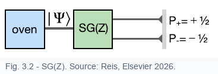

Projection amplitudes become measurement probabilities
8 / 15
Guided reading
The Born rule tells how a state vector becomes a probability statement. In the Stern-Gerlach setup, it predicts how the incoming beam divides between outgoing beams.
The probability of finding the result associated with \(|n\rangle\) is therefore
\[P_n=|C_n|^2=|\langle n|\Psi\rangle|^2.\]
Postulate of probability
When a measurement of \(\hat A\) is performed in a state \(|\Psi\rangle\), the probability of obtaining eigenvalue \(a_n\) is the squared modulus of the projection of the state onto the corresponding eigenstate.
Amplitude first, probability second: \(\langle n|\Psi\rangle\) can carry phase information that may matter in a later measurement.
Stern-Gerlach example

Figure 3.2, cropped from the book: one SG(Z) measurement. The outgoing intensities are the probabilities predicted by the Born rule.